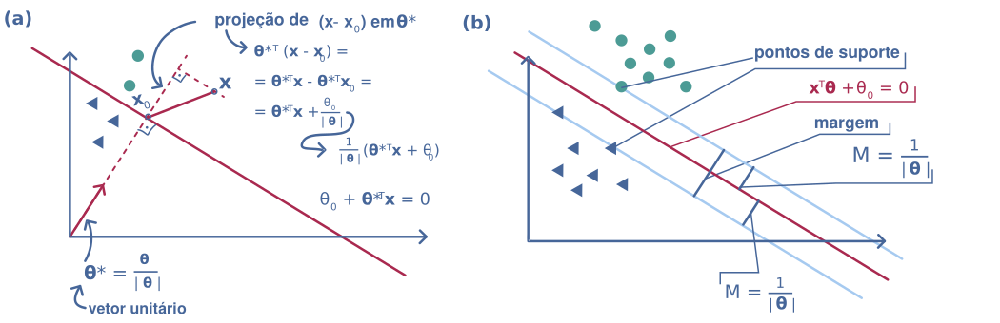
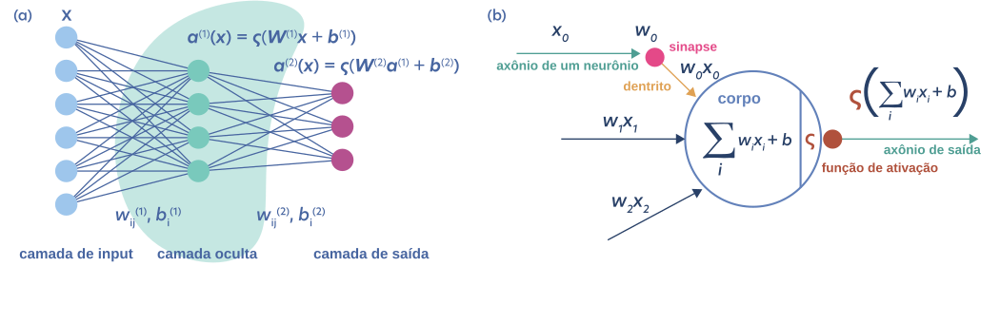

8. Modelos de Machine Learning#
Depois de discutir otimização, generalização, regularização e a interpretação probabilística do aprendizado, chegamos ao terceiro ingrediente de um problema de Machine Learning: o modelo. Um modelo é a família de funções que estabelece como a entrada \(\mathbf{x}\) pode ser transformada em uma previsão \(\hat{y}\) ou, de forma mais geral, em uma distribuição de probabilidade sobre possíveis saídas.
Seguindo a organização do Capítulo 2 de Modern Applications of Machine Learning in Quantum Sciences [Dawid et al., 2025], começaremos por alguns modelos de Machine Learning tradicional — regressão linear, regressão logística e Support Vector Machines — e depois passaremos para modelos baseados em redes neurais, incluindo CNNs, autoencoders e redes autoregressivas.
Machine Learning tradicional e Deep Learning não são áreas separadas. Deep Learning é um subcampo de Machine Learning. A distinção usada aqui é operacional: chamaremos de ML tradicional os métodos que não utilizam redes neurais e de Deep Learning (DL) os métodos construídos a partir de redes neurais profundas.
Essa distinção é útil porque os dois grupos costumam incorporar conhecimento do problema de formas diferentes. Em métodos tradicionais, a estrutura do modelo geralmente é escolhida de maneira mais explícita: regressão linear impõe uma relação linear nos parâmetros; SVMs partem de uma construção geométrica; métodos de kernel dependem de uma representação específica dos dados. Redes neurais, por outro lado, fornecem classes de funções muito mais flexíveis e podem aprender representações internas diretamente a partir dos dados.
Isso não significa que um grupo seja universalmente superior ao outro. Em problemas com poucos dados, um modelo mais restrito pode incorporar uma hipótese útil e generalizar melhor. Em grandes conjuntos de dados, redes neurais profundas podem explorar sua flexibilidade para aprender representações que seriam difíceis de construir manualmente.
Neste capítulo, o objetivo não é listar todos os algoritmos existentes, mas entender o princípio matemático de algumas famílias fundamentais de modelos e como cada uma transforma o problema de aprendizado em um problema de otimização.
import fitz # PyMuPDF
from IPython.display import SVG, display
import re
def plot_pdf_as_svg(pdf_path, zoom=2.0, width=800, height=600):
"""
Lê um PDF de uma página (gráfico), aplica zoom interno (matrix) no conteúdo,
e também ajusta a tela externa (width, height) do SVG final.
"""
doc = fitz.open(pdf_path)
page = doc[0]
# Cria matriz de zoom
matrix = fitz.Matrix(zoom, zoom)
# Gera SVG com conteúdo escalado
svg_text = page.get_svg_image(matrix=matrix)
# Substitui a tag <svg> para ajustar a moldura externa (pixels finais)
svg_tag_pattern = r'<svg\b[^>]*>'
new_svg_tag = (f'<svg xmlns="http://www.w3.org/2000/svg" '
f'xmlns:xlink="http://www.w3.org/1999/xlink" '
f'width="{width}" height="{height}">')
svg_text = re.sub(svg_tag_pattern, new_svg_tag, svg_text, count=1)
# Exibe
display(SVG(svg_text))
doc.close()
8.1. Regressão linear e regressão ridge#
8.1.1. O problema de regressão#
Em uma tarefa supervisionada de regressão, observamos um conjunto de dados rotulado
no qual os valores observados podem ser entendidos como o resultado de uma função desconhecida \(f\) acrescida de ruído:
O objetivo é construir uma aproximação \(\hat f\) capaz de prever \(y\) para entradas ainda não observadas.
A forma parametrizada mais simples é o modelo linear. Para uma entrada com \(d-1\) atributos,
Podemos incorporar o intercepto \(b\) ao vetor de parâmetros definindo \(x_0=1\) e \(\theta_0=b\). Assim,
O termo linear refere-se à linearidade nos parâmetros \(\boldsymbol{\theta}\). Por isso, ainda podemos aplicar uma transformação não linear às entradas e continuar utilizando regressão linear. Por exemplo,
leva à regressão polinomial de grau \(p\), mas o modelo continua linear em relação aos coeficientes que serão ajustados.
8.1.2. Ajuste por mínimos quadrados#
Para medir a discrepância entre os valores observados e as previsões, uma escolha natural é o erro quadrático médio:
Em notação matricial, essa perda é proporcional a
Como o problema é quadrático, o mínimo pode ser obtido analiticamente. O estimador de mínimos quadrados é
onde \(X^{+}\) é a pseudoinversa de Moore–Penrose.
8.1.3. Por que o MSE aparece naturalmente?#
A escolha do MSE também pode ser justificada probabilisticamente. Suponha que, para uma entrada \(\mathbf{x}_i\), o alvo seja distribuído segundo uma Gaussiana cuja média é a previsão linear:
Assumindo observações i.i.d., a verossimilhança do conjunto de dados é
Maximizar essa verossimilhança é equivalente a maximizar sua log-verossimilhança e, depois de eliminar termos que não dependem de \(\boldsymbol{\theta}\), obtemos
Portanto,
Isto conecta três ideias vistas anteriormente: regressão linear, minimização do MSE e máxima verossimilhança sob ruído Gaussiano.
8.1.4. Ridge: regularizando o modelo#
O ajuste de mínimos quadrados tenta explicar o conjunto de treinamento tão bem quanto possível. Quando há ruído, multicolinearidade ou uma representação com muitos graus de liberdade, isso pode produzir coeficientes de grande magnitude e pior generalização.
Uma maneira de restringir o espaço de soluções é introduzir um prior Gaussiano sobre os parâmetros,
Em vez de maximizar apenas a verossimilhança, maximizamos a posteriori:
Com verossimilhança e prior Gaussianos, isso equivale a minimizar
O estimador resultante é
O hiperparâmetro \(\lambda\) controla a intensidade da regularização:
\(\lambda\rightarrow 0\): recuperamos aproximadamente o ajuste de mínimos quadrados;
\(\lambda\) maior: coeficientes grandes são penalizados com mais força;
regularização excessiva pode aumentar o viés e produzir underfitting.
A regressão ridge é, portanto, um exemplo concreto da conexão entre regularização \(L_2\), inferência Bayesiana e estimativa MAP.
Uma alternativa importante é a regressão LASSO, que utiliza penalização \(L_1\),
Como a penalização \(L_1\) favorece coeficientes exatamente nulos, o LASSO pode produzir soluções esparsas e atuar também como mecanismo de seleção de atributos.
8.2. Regressão logística#
Apesar do nome, regressão logística é um modelo de classificação. A ideia é começar com um escore real — frequentemente uma combinação linear das entradas — e transformá-lo em uma probabilidade.
8.2.1. Classificação binária#
Considere duas classes, \(K_1\) e \(K_2\). A probabilidade posterior de uma observação pertencer à classe \(K_1\) pode ser escrita na forma
onde
é o escore produzido pelo modelo e
é a função sigmoide.
A sigmoide transforma qualquer valor real em um número no intervalo \((0,1)\), permitindo interpretar a saída como probabilidade. Uma regra de decisão simples é classificar como \(K_1\) quando \(p(K_1\mid\mathbf{x})>0.5\). Nesse caso, a fronteira de decisão satisfaz
Como o escore é linear, essa fronteira é um hiperplano.
Os parâmetros são normalmente obtidos minimizando a entropia cruzada binária (BCE), apresentada no capítulo anterior. Assim, a regressão logística fornece uma ponte direta entre:
8.2.2. Extensão para múltiplas classes#
Para \(K\) classes, usamos um vetor de escores \(\mathbf z=(z_1,\ldots,z_K)\) e a função softmax:
A softmax normaliza todos os escores simultaneamente e produz uma distribuição de probabilidade sobre as classes:
Nesse caso, o treinamento é feito tipicamente com entropia cruzada categórica.
A regressão logística é probabilística: ela procura parâmetros que produzam probabilidades compatíveis com os rótulos observados. Uma consequência é que pontos extremos podem influenciar fortemente a solução. A próxima família de modelos, as SVMs, parte de uma construção diferente: em vez de formular diretamente probabilidades, procura uma fronteira de decisão geometricamente ótima.
8.3. Support Vector Machines (SVM)#
As Support Vector Machines abordam a classificação por uma perspectiva geométrica. No caso binário e linearmente separável, buscamos um hiperplano
que separe as duas classes.
O vetor \(\boldsymbol{\theta}\) é perpendicular ao hiperplano. A distância de um ponto \(\mathbf{x}\) até essa fronteira é
Existem, em geral, muitos hiperplanos capazes de separar corretamente os dados de treinamento. A SVM introduz então um critério adicional: escolher a fronteira que maximize a margem entre as classes.
# ler figura fig_2_5.pdf
plot_pdf_as_svg('../../_static/fig_2_5.pdf', zoom=2.4, width=1050, height=340 )

Figura 2.5 da Ref. [Dawid et al., 2025]: construção geométrica de uma SVM linear em duas dimensões.
No painel (a), a linha representa um possível hiperplano separador. Em duas dimensões ele é simplesmente uma reta, mas a mesma construção vale em espaços de dimensão maior. O vetor \(\boldsymbol{\theta}\) é normal à fronteira e determina sua orientação.
O painel (b) mostra a ideia central da SVM. Em vez de aceitar qualquer separação correta, procuramos o hiperplano que deixa a maior distância possível até os pontos mais próximos de cada classe. Esses pontos são os vetores de suporte (support vectors). Eles determinam a posição da fronteira ótima; pontos muito afastados da margem não alteram diretamente a solução.
Se codificarmos os rótulos como \(y_i\in\{-1,+1\}\), podemos escolher uma escala para os parâmetros tal que
Nessa forma canônica, maximizar a margem é equivalente a minimizar
sujeito às restrições acima. O problema é quadrático e convexo, portanto possui um mínimo global.
Introduzindo multiplicadores de Lagrange \(\alpha_i\), a solução pode ser expressa em termos dos pontos de treinamento. Pela condição de complementaridade:
pontos fora da margem têm \(\alpha_i=0\);
os pontos que tocam a margem podem ter \(\alpha_i>0\).
Por isso, a função de decisão final depende apenas dos vetores de suporte:
e a classe é obtida pelo sinal de \(\hat f(\mathbf{x})\).
8.3.1. Mais de duas classes#
Uma SVM binária pode ser estendida para várias classes, por exemplo, por:
one-vs-one: treinar um classificador para cada par de classes;
one-vs-rest: treinar um classificador para cada classe contra todas as demais.
Até aqui consideramos fronteiras lineares. SVMs também podem produzir fronteiras não lineares por meio de transformações de atributos e do kernel trick, tema que será retomado posteriormente.
8.4. Redes neurais#
Uma rede neural artificial é uma função parametrizada construída pela composição de várias funções mais simples. A unidade básica é o neurônio artificial ou perceptron.
Para um vetor de entradas \(\mathbf{x}\), um neurônio calcula primeiro uma combinação afim
e depois aplica uma função de ativação não linear:
Os parâmetros treináveis são os pesos \(w_{ij}\) e os biases \(b_i\).
plot_pdf_as_svg('../../_static/fig_2_6.pdf', zoom=2.4, width=1050, height=340 )

Figura 2.6 da Ref. [Dawid et al., 2025]: (a) rede neural totalmente conectada e (b) operação realizada por um neurônio.
8.4.1. Como ler a figura#
No painel (a), a informação percorre a rede da esquerda para a direita:
a camada de entrada recebe os atributos \(\mathbf{x}\);
cada camada oculta transforma as ativações da camada anterior;
a camada de saída produz a previsão final.
Para uma camada \(l\), podemos escrever
Em uma rede fully connected, cada neurônio de uma camada está conectado a todos os neurônios da camada seguinte. O número de camadas, o número de neurônios e o padrão de conexões constituem a arquitetura da rede.
O painel (b) amplia um único neurônio. Cada entrada \(x_j\) chega multiplicada por um peso \(w_j\). Esses termos são somados ao bias \(b\) e o resultado passa por uma função de ativação. É essa não linearidade que permite que redes neurais representem funções muito mais complexas do que uma simples transformação afim.
Algumas ativações comuns são
e
Sem funções de ativação não lineares, a composição de várias camadas lineares continuaria sendo apenas uma transformação linear. Portanto, profundidade sem não linearidade não aumenta a classe funcional do modelo.
8.4.2. Aproximação universal e profundidade#
O teorema da aproximação universal estabelece, sob condições adequadas, que uma rede com uma camada oculta e número suficiente de neurônios pode aproximar arbitrariamente bem uma grande classe de funções contínuas. Isso é um resultado de existência: ele não diz que o treinamento encontrará facilmente os pesos necessários, nem que uma rede rasa será eficiente.
Na prática, redes profundas podem representar certas funções com muito menos parâmetros do que redes rasas. Esse é um dos motivos pelos quais Deep Neural Networks (DNNs) se tornaram tão importantes.
Durante a avaliação de uma rede, a informação flui da entrada para a saída — forward propagation. Durante o treinamento, os gradientes da função de perda são propagados no sentido inverso por backpropagation, que veremos ao final deste capítulo.
8.4.3. Redes neurais convolucionais (CNNs)#
Em dados com estrutura espacial, como imagens, a conectividade total pode ser desnecessária e muito cara. As Convolutional Neural Networks (CNNs) substituem parte das multiplicações matriciais densas por convoluções locais.
A hipótese incorporada pelo modelo é que padrões locais são importantes: pixels próximos tendem a carregar relações mais fortes do que pixels muito distantes. Um pequeno conjunto de pesos — o kernel ou filtro — é reutilizado em diferentes posições da entrada.
plot_pdf_as_svg('../../_static/fig_2_7.pdf', zoom=2.4, width=1050, height=340 )

Figura 2.7 da Ref. [Dawid et al., 2025]: operação de uma camada convolucional bidimensional.
A figura mostra um kernel \(3\times3\) deslizando sobre uma entrada bidimensional. Em cada posição:
seleciona-se uma pequena janela da entrada;
multiplica-se cada elemento da janela pelo peso correspondente do kernel;
somam-se os produtos;
o resultado forma uma ativação na saída da convolução;
normalmente aplica-se também uma função de ativação não linear.
Esse mecanismo traz duas propriedades fundamentais.
Conectividade local: cada ativação depende apenas de uma região da entrada, e não de todos os pixels.
Compartilhamento de pesos: o mesmo kernel é usado em várias posições. Assim, o número de parâmetros depende principalmente do tamanho e da quantidade de filtros, não diretamente do tamanho total da imagem.
O tamanho do kernel determina a escala espacial examinada por uma camada. Empilhando várias convoluções, camadas mais profundas podem combinar padrões locais simples em representações progressivamente mais abstratas.
CNNs frequentemente incluem também operações de pooling, como max pooling ou average pooling, para reduzir a dimensionalidade espacial. Após várias etapas convolucionais, as ativações podem ser achatadas (flattened) e encaminhadas para camadas totalmente conectadas responsáveis pela previsão final.
8.5. Autoencoders#
Autoencoders (AEs) são redes neurais muito utilizadas em aprendizado não supervisionado e redução de dimensionalidade. A ideia é aprender uma representação compacta dos dados sem precisar de rótulos.
Um autoencoder possui duas partes:
encoder: transforma a entrada \(\mathbf{x}\) em uma representação latente \(\mathbf{z}\);
decoder: utiliza \(\mathbf{z}\) para reconstruir uma aproximação \(\hat{\mathbf{x}}\) da entrada.
Podemos representar o processo como
O treinamento minimiza uma perda de reconstrução, por exemplo
plot_pdf_as_svg('../../_static/fig_2_8.pdf', zoom=2.4, width=850, height=550 )

Figura 2.8 da Ref. [Dawid et al., 2025]: arquitetura de gargalo de um autoencoder.
A entrada possui seis componentes \((x_1,\ldots,x_6)\), mas a camada central possui apenas três ativações \((a_1,a_2,a_3)\). Essa camada estreita é o bottleneck ou gargalo.
O encoder precisa, portanto, comprimir a informação necessária para reconstruir os dados em um espaço de dimensão menor. O decoder recebe apenas essa representação comprimida e tenta produzir
A restrição do gargalo é essencial. Sem ela — ou sem outra forma de regularização — uma rede suficientemente flexível poderia simplesmente aprender a copiar a entrada, sem descobrir uma representação útil.
Ao minimizar o erro de reconstrução, encoder e decoder são otimizados conjuntamente. Idealmente, a variável latente retém as variações mais relevantes dos dados e descarta redundâncias. Isso aproxima conceitualmente os autoencoders de métodos como PCA, embora as redes neurais permitam transformações muito mais flexíveis e não lineares.
8.5.1. Autoencoders variacionais#
Um desenvolvimento importante é o Variational Autoencoder (VAE). Em vez de representar cada entrada por um único ponto latente, o VAE aprende parâmetros de uma distribuição no espaço latente. Depois do treinamento, podemos amostrar dessa distribuição e decodificar as amostras para gerar novos exemplos semelhantes aos dados de treinamento.
Existem ainda variantes como denoising autoencoders, sparse autoencoders e outras arquiteturas que alteram a restrição imposta à representação latente.
8.6. Redes neurais autoregressivas#
Modelos autoregressivos representam uma distribuição conjunta de alta dimensão como um produto de distribuições condicionais. Pela regra da cadeia da probabilidade,
A grande vantagem é transformar a modelagem de uma distribuição conjunta complexa em uma sequência de previsões condicionais.
Em séries temporais, por exemplo, o valor em um instante pode ser previsto a partir dos valores anteriores. Em linguagem natural, a mesma ideia permite escrever
isto é, a probabilidade de uma sequência é construída palavra por palavra.
plot_pdf_as_svg('../../_static/fig_2_9.pdf', zoom=2.4, width=900, height=350 )

Figura 2.9 da Ref. [Dawid et al., 2025]: representação de uma RNN utilizada autoregressivamente para prever a próxima palavra.
A figura mostra uma Recurrent Neural Network (RNN) desenrolada ao longo de uma sequência. Em cada passo \(t\), a célula recebe:
a entrada atual \(\mathbf{x}^{(t)}\);
um estado oculto \(\mathbf{h}^{(t-1)}\) proveniente do passo anterior.
Uma forma simples da atualização é
O vetor oculto funciona como uma memória interna da informação acumulada. A partir dele, uma camada de saída — por exemplo, uma softmax — calcula a distribuição de probabilidade para o próximo elemento.
No exemplo da figura, depois de observar “May”, “the”, “Force” e “be”, a rede produz sucessivamente distribuições
onde \(W\) representa a próxima palavra possível.
A característica autoregressiva aparece explicitamente: cada previsão depende apenas dos elementos anteriores da sequência, preservando uma ordem causal.
RNNs simples podem ter dificuldade para manter dependências por muitos passos. Arquiteturas como LSTM e GRU introduzem mecanismos de memória e gates que ajudam a controlar quais informações são preservadas ou esquecidas.
Embora hoje Transformers dominem grande parte do processamento de linguagem, RNNs continuam sendo fundamentais para entender a evolução dos modelos sequenciais e o princípio autoregressivo que permanece central em muitos modelos generativos modernos.
8.7. Backpropagation#
Redes neurais são normalmente treinadas por métodos baseados em gradiente. Para atualizar cada peso e bias, precisamos calcular
Fazer isso manualmente para cada arquitetura seria inviável. A backpropagation é uma aplicação eficiente da diferenciação automática em modo reverso que explora a estrutura em camadas da rede e a regra da cadeia.
8.7.1. Forward pass#
Para a camada \(l\),
com
No forward pass, calculamos sucessivamente todas as ativações até obter a saída
Também armazenamos as ativações e os valores intermediários necessários para as derivadas. Esse armazenamento evita recalcular o mesmo caminho durante a etapa reversa.
8.7.2. Reverse pass#
Começamos na saída, calculando o erro local da última camada. Usando a convenção de vetores coluna, podemos definir
onde \(\odot\) é o produto elemento a elemento.
Para as camadas anteriores,
Depois que \(\boldsymbol{\delta}^{(l)}\) é conhecido, os gradientes seguem diretamente:
A essência do algoritmo é reutilizar derivadas intermediárias. Em vez de recalcular toda a cadeia para cada parâmetro, o erro é propagado uma única vez da saída para a entrada.
plot_pdf_as_svg('../../_static/fig_2_10.pdf', zoom=2.4, width=1050, height=1480 )

Figura 2.10 da Ref. [Dawid et al., 2025]: exemplo explícito de backpropagation em uma rede feedforward de duas camadas com ReLU e perda MSE.
A figura pode ser lida em três etapas.
8.7.3. (a) Rede e parâmetros#
A rede recebe
possui dois neurônios na camada oculta e um neurônio de saída. Todas as ativações utilizam
cuja derivada é
O alvo do exemplo é \(y=0\).
8.7.4. (b) Forward pass#
Para o primeiro neurônio oculto,
portanto
Para o segundo neurônio,
logo
A saída é então
e
Com MSE para esse único exemplo,
Observe que o forward pass não produz apenas a previsão: ele também fornece as ativações e informa em quais neurônios a derivada da ReLU será 0 ou 1. Esses valores são reutilizados na etapa reversa.
8.7.5. (c) Backward pass#
Na saída,
Assim, para o peso que conecta \(a_1^{(1)}\) à saída,
Agora propagamos o erro para o primeiro neurônio oculto:
Portanto, para o peso que conecta \(x_2\) a esse neurônio,
O segundo neurônio oculto tem ativação nula e \(z_2^{(1)}<0\). Nesse exemplo, sua derivada da ReLU é zero, bloqueando a propagação de gradiente por esse caminho.
8.7.6. Por que calcular os gradientes de trás para frente?#
O custo de treinar redes grandes vem do fato de existirem muitos parâmetros. Se calculássemos separadamente a derivada da saída em relação a cada peso seguindo o fluxo para frente, repetiríamos uma enorme quantidade de operações.
A backpropagation resolve isso reutilizando os mesmos termos intermediários da regra da cadeia. Um único forward pass calcula e armazena as ativações; um único backward pass produz os gradientes de todos os parâmetros. Essa eficiência computacional foi essencial para tornar viável o treinamento de redes neurais profundas.
Resumo: forward propagation calcula a previsão; backpropagation calcula como a perda varia em relação a cada parâmetro; o otimizador, como SGD ou Adam, usa esses gradientes para efetivamente atualizar os parâmetros.